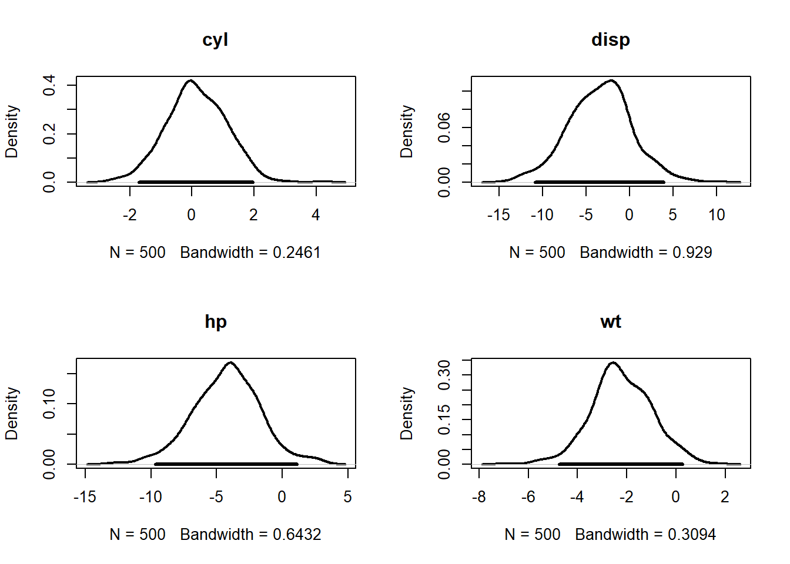
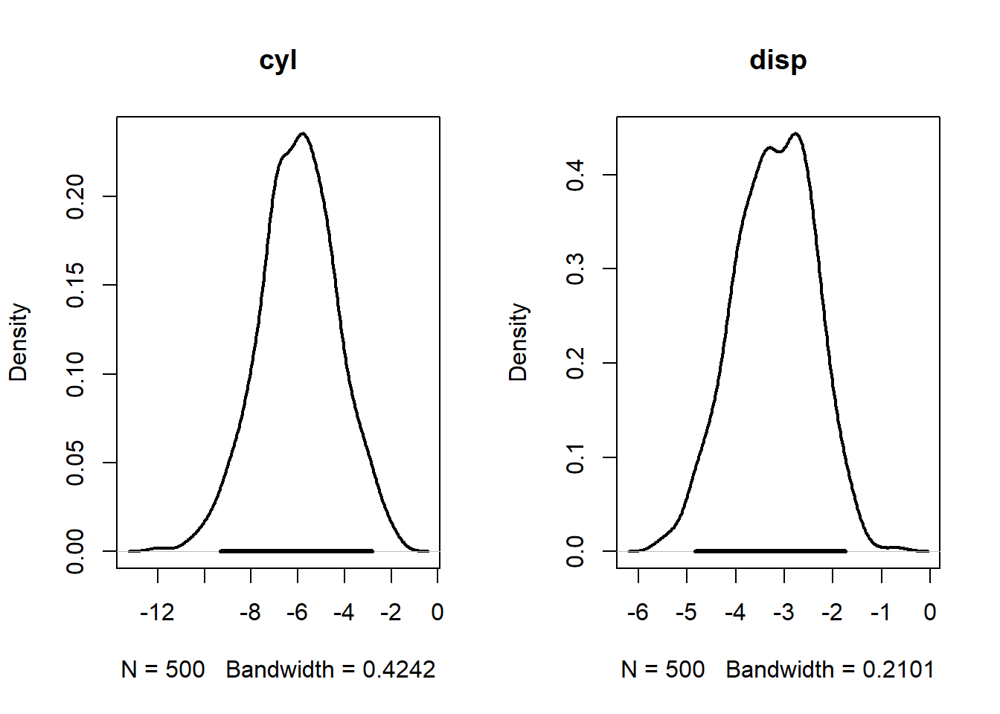

banco <- mtcars[,c("mpg","cyl", "disp","hp","wt")]
pairs(banco)
Denominamos regressão o problema de determinar a média de \(Y\) dado o vetor \(\boldsymbol{x}'=(x_1,\ldots,x_q)\). Em particular se
\[E(Y|\boldsymbol{x},\boldsymbol{\beta})=\boldsymbol{x}'\boldsymbol{\beta}=\sum_{j=1}^q x_j\beta_j,\] dizemos que a regressão é linear (em \(\boldsymbol{\beta}\)) e o objetivo passa a ser fazer inferências sobre \(\boldsymbol{\beta}\).
No problema de regressão, as seguintes nomenclaturas são usuais:
\(Y\): variável resposta, output, resultado, variável dependente
\(\boldsymbol{x}\): variáveis regressoras, input, variáveis independentes
Os termos input e output são usuais em aprendizagem de máquina, enquanto que variável independente e dependente são usuais na área da saúde (vale ressaltar que não há relação com a independência sob o ponto de vista da probabilidade, pois claramente \(Y\) e \(\boldsymbol{X}\) são dependentes).
Sejam \(Y_1,\ldots,Y_n\) uma amostra de variáveis aleatórias independentes. Sejam \(\boldsymbol{x}_1,\ldots,\boldsymbol{x}_n\) vetores de dimensão \(q\). Então, o modelo de regressão linear normal é dado por
\[y|\boldsymbol{x},\boldsymbol{\beta}\sim\hbox{Normal}(\boldsymbol{x}'\boldsymbol{\beta},\sigma^2).\]
Como \(Y_1,\ldots,Y_n\) são independentes, temos que \(\boldsymbol{Y}'=(Y_1,\ldots,Y_n)\) tem distribuição normal multivariada com média
\[E(\boldsymbol{Y}|\boldsymbol{x}_1,\ldots,\boldsymbol{x}_n)=\left(\begin{array}{c}E(Y_1|\boldsymbol{x}_1)\\ \vdots \\ E(Y_n|\boldsymbol{x}_n)\end{array}\right)=\left(\begin{array}{c}\boldsymbol{x}_1'\boldsymbol{\beta}\\ \vdots \\ \boldsymbol{x}_n'\boldsymbol{\beta}\end{array}\right)=\underbrace{\left(\begin{array}{c}\boldsymbol{x}_1'\\ \vdots \\ \boldsymbol{x}_n'\end{array}\right)}_{\boldsymbol{X}}\boldsymbol{\beta}=\boldsymbol{X}\boldsymbol{\beta}\]
e como \(Var(Y_i|\boldsymbol{X})=Var(Y_i|\boldsymbol{x}_i)=\sigma^2\) e, para \(i\neq j,\) \(Cov(Y_i,Y_j|\boldsymbol{X})=0\), teremos que \[Var(\boldsymbol{Y}|\boldsymbol{X})=\sigma^2\text{I}_n\] Portanto \(\boldsymbol{Y}|\boldsymbol{X},\boldsymbol{\beta},\sigma^2\sim\hbox{Normal}(\boldsymbol{X}\boldsymbol{\beta},\sigma^2\text{I}_q)\). Sua função de verossimilhança é
\[L(\boldsymbol{\beta},\sigma^2)\propto \left(\frac{1}{2\pi\sigma^2}\right)^{\frac{n}{2}}e^{-\frac{1}{2\sigma^2}(\boldsymbol{y}-\boldsymbol{X}\boldsymbol{\beta})'(\boldsymbol{y}-\boldsymbol{X}\boldsymbol{\beta})}.\] Note que
\[\begin{align} (\boldsymbol{y}-\boldsymbol{X}\boldsymbol{\beta})'(\boldsymbol{y}-\boldsymbol{X}\boldsymbol{\beta})&= \boldsymbol{y}'\boldsymbol{y}+\boldsymbol{\beta}'(\boldsymbol{X}'\boldsymbol{X})\boldsymbol{\beta}-2\boldsymbol{\beta}'\boldsymbol{X}'\boldsymbol{y}\\&= \boldsymbol{y}'\boldsymbol{y}+\boldsymbol{\beta}'(\boldsymbol{X}'\boldsymbol{X})\boldsymbol{\beta}-2\boldsymbol{\beta}'(\boldsymbol{X}'\boldsymbol{X})\underbrace{(\boldsymbol{X}'\boldsymbol{X})^{-1}\boldsymbol{X}'\boldsymbol{y}}_{\hat{\boldsymbol{\beta}}} \\&= \boldsymbol{y}'\boldsymbol{y}+\boldsymbol{\beta}'(\boldsymbol{X}'\boldsymbol{X})\boldsymbol{\beta}-2\boldsymbol{\beta}'(\boldsymbol{X}'\boldsymbol{X})\hat{\boldsymbol{\beta}}\pm \hat{\boldsymbol{\beta}}'(\boldsymbol{X}'\boldsymbol{X})\hat{\boldsymbol{\beta}}\\&=(\boldsymbol{\beta}-\hat{\boldsymbol{\beta}})'(\boldsymbol{X}'\boldsymbol{X})(\boldsymbol{\beta}-\hat{\boldsymbol{\beta}})+\boldsymbol{y}'\boldsymbol{y}-\hat{\boldsymbol{\beta}}'(\boldsymbol{X}'\boldsymbol{X})\hat{\boldsymbol{\beta}}\end{align} \] Observe que \[\begin{align}\hat{\boldsymbol{\beta}}'(\boldsymbol{X}'\boldsymbol{X})\hat{\boldsymbol{\beta}}&=((\boldsymbol{X}'\boldsymbol{X})^{-1}\boldsymbol{X}'\boldsymbol{y})'(\boldsymbol{X}'\boldsymbol{X})(\boldsymbol{X}'\boldsymbol{X})^{-1}\boldsymbol{X}'\boldsymbol{y}\\ &=((\boldsymbol{X}'\boldsymbol{X})^{-1}\boldsymbol{X}'\boldsymbol{y})'\boldsymbol{X}'\boldsymbol{y}\\&= \boldsymbol{y}\boldsymbol{X}(\boldsymbol{X}'\boldsymbol{X})^{-1}\boldsymbol{X}'\boldsymbol{y}\end{align}\] logo
\[\begin{align} (\boldsymbol{y}-\boldsymbol{X}\boldsymbol{\beta})'(\boldsymbol{y}-\boldsymbol{X}\boldsymbol{\beta})&= (\boldsymbol{\beta}-\hat{\boldsymbol{\beta}})'(\boldsymbol{X}'\boldsymbol{X})(\boldsymbol{\beta}-\hat{\boldsymbol{\beta}})+\underbrace{\boldsymbol{y}'(\text{I}_n-\boldsymbol{X}(\boldsymbol{X}'\boldsymbol{X})^{-1}\boldsymbol{X}')\boldsymbol{y}}_{SQR}\end{align} \] onde \(SQR\) é a sigla para soma de quadrados de resíduos. Esse termo tem esse nome porque \[SQR=(\boldsymbol{y}-\boldsymbol{X}\hat{\boldsymbol{\beta}})'(\boldsymbol{y}-\boldsymbol{X}\hat{\boldsymbol{\beta}})\] e \[\boldsymbol{r}=\boldsymbol{y}-\boldsymbol{X}\hat{\boldsymbol{\beta}}\] é denominado vetor de resíduos. Portanto, a função de verossimilhança pode ser reescrita como
\[L(\boldsymbol{\beta},\sigma^2)\propto \left(\frac{1}{2\pi\sigma^2}\right)^{\frac{n}{2}}e^{-\frac{1}{2\sigma^2}(\boldsymbol{\beta}-\hat{\boldsymbol{\beta}})'(\boldsymbol{X}'\boldsymbol{X})(\boldsymbol{\beta}-\hat{\boldsymbol{\beta}})}e^{-\frac{1}{2\sigma^2}SQR}.\] ## Priori conjugada e suas limitações
Seja \(\phi=1/\sigma^2\). Então, a priori normal-gama, também escrita como \[\begin{align}\boldsymbol{\beta}|\phi,\boldsymbol{X}&\sim\hbox{Normal}(\boldsymbol{\beta}_0,\phi^{-1} C_0^{-1})\\ \phi&\sim\hbox{Gama}\left(\frac{n_0}{2},\frac{s_0}{2}\right)\end{align}\] é conjugada para o modelo linear. A posteriori é dada por
\[\begin{align}f(\boldsymbol{\beta},\phi|\text{dados})&\propto \phi^\frac{n}{2}e^{-\frac{\phi}{2}(\boldsymbol{\beta}-\hat{\boldsymbol{\beta}})'(\boldsymbol{X}'\boldsymbol{X})(\boldsymbol{\beta}-\hat{\boldsymbol{\beta}})-\frac{\phi}{2}SQR}\times\\&|\phi\boldsymbol{C}_0|^{1/2}e^{-\frac{\phi}{2}(\boldsymbol{\beta}-\boldsymbol{\beta}_0)'\boldsymbol{C}_0(\boldsymbol{\beta}-\boldsymbol{\beta}_0)]}\phi^{\frac{n_0}{2}-1}e^{-\frac{s_0}{2}\phi}\\&=\phi^{\frac{q}{2}}e^{-\frac{\phi}{2}[(\boldsymbol{\beta}-\hat{\boldsymbol{\beta}})'(\boldsymbol{X}'\boldsymbol{X})(\boldsymbol{\beta}-\hat{\boldsymbol{\beta}})+(\boldsymbol{\beta}-\boldsymbol{\beta}_0)'\boldsymbol{C}_0(\boldsymbol{\beta}-\boldsymbol{\beta}_0)]}\phi^{\frac{n+n_0}{2}-1}e^{-\frac{\phi}{2}(SQR+s_0)}\end{align}\] Como \[\begin{align} &(\boldsymbol{\beta}-\hat{\boldsymbol{\beta}})'(\boldsymbol{X}'\boldsymbol{X})(\boldsymbol{\beta}-\hat{\boldsymbol{\beta}})+(\boldsymbol{\beta}-\boldsymbol{\beta}_0)'\boldsymbol{C}_0(\boldsymbol{\beta}-\boldsymbol{\beta}_0)\\&=\boldsymbol{\beta}'[\underbrace{(\boldsymbol{X}'\boldsymbol{X})+\boldsymbol{C}_0}_{\boldsymbol{C}_1}]\boldsymbol{\beta}-2\boldsymbol{\beta}'( (\boldsymbol{X}'\boldsymbol{X})\hat{\boldsymbol{\beta}}+\boldsymbol{C}_0\boldsymbol{\beta}_0)+\hat{\boldsymbol{\beta}}'(\boldsymbol{X}'\boldsymbol{X})\hat{\boldsymbol{\beta}}+\boldsymbol{\beta}_0'\boldsymbol{C}_0\boldsymbol{\beta}_0\\ &=\boldsymbol{\beta}'\boldsymbol{C}_1\boldsymbol{\beta}-2\boldsymbol{\beta}'\boldsymbol{C}_1[\underbrace{\boldsymbol{C}_1^{-1}( (\boldsymbol{X}'\boldsymbol{X})\hat{\boldsymbol{\beta}}+\boldsymbol{C}_0\boldsymbol{\beta}_0)}_{\tilde{\boldsymbol{\beta}}}]+\hat{\boldsymbol{\beta}}'(\boldsymbol{X}'\boldsymbol{X})\hat{\boldsymbol{\beta}}+\boldsymbol{\beta}_0'\boldsymbol{C}_0\boldsymbol{\beta}_0\\ &=\boldsymbol{\beta}'\boldsymbol{C}_1\boldsymbol{\beta}-2\boldsymbol{\beta}'\boldsymbol{C}_1\tilde{\boldsymbol{\beta}}\pm\tilde{\boldsymbol{\beta}}'\boldsymbol{C}_1\tilde{\boldsymbol{\beta}}+\hat{\boldsymbol{\beta}}'(\boldsymbol{X}'\boldsymbol{X})\hat{\boldsymbol{\beta}}+\boldsymbol{\beta}_0'\boldsymbol{C}_0\boldsymbol{\beta}_0\\ &=(\boldsymbol{\beta}-\tilde{\boldsymbol{\beta}})'\boldsymbol{C}_1(\boldsymbol{\beta}-\tilde{\boldsymbol{\beta}})+\hat{\boldsymbol{\beta}}'(\boldsymbol{X}'\boldsymbol{X})\hat{\boldsymbol{\beta}}+\boldsymbol{\beta}_0'\boldsymbol{C}_0\boldsymbol{\beta}_0-\tilde{\boldsymbol{\beta}}'\boldsymbol{C}_1\tilde{\boldsymbol{\beta}} \end{align}\] Além disso, pode-se mostrar que \[\hat{\boldsymbol{\beta}}'(\boldsymbol{X}'\boldsymbol{X})\hat{\boldsymbol{\beta}}+\boldsymbol{\beta}_0'\boldsymbol{C}_0\boldsymbol{\beta}_0-\tilde{\boldsymbol{\beta}}'\boldsymbol{C}_1\tilde{\boldsymbol{\beta}}=(\hat{\boldsymbol{\beta}}-\boldsymbol{\beta}_0)'(\boldsymbol{C}_0+(\boldsymbol{X}'\boldsymbol{X})^{-1})^{-1}(\hat{\boldsymbol{\beta}}-\boldsymbol{\beta}_0)\] \[\begin{align}f(\boldsymbol{\beta},\phi|\text{dados})&\propto\phi^{\frac{q}{2}}e^{-\frac{\phi}{2}(\boldsymbol{\beta}-\tilde{\boldsymbol{\beta}})'\boldsymbol{C}_1(\boldsymbol{\beta}-\tilde{\boldsymbol{\beta}})}\phi^{\frac{n+n_0}{2}-1}e^{-\frac{\phi}{2}(SQR+s_0+(\hat{\boldsymbol{\beta}}-\boldsymbol{\beta}_0)'(\boldsymbol{C}_0+(\boldsymbol{X}'\boldsymbol{X})^{-1})^{-1}(\hat{\boldsymbol{\beta}}-\boldsymbol{\beta}_0))}\end{align}\] ou seja \[\begin{align}\boldsymbol{\beta}|\phi,\hbox{dados}&\sim\hbox{Normal}(\tilde{\boldsymbol{\beta}},\phi^{-1}\boldsymbol{C}_1^{-1})\\ \phi|\text{dados}&\sim\hbox{Gama}\left(\frac{n_0+n}{2},\frac{s_1}{2}\right) \end{align}\] onde \[s_1=SQR+s_0+(\hat{\boldsymbol{\beta}}-\boldsymbol{\beta}_0)'(\boldsymbol{C}_0+(\boldsymbol{X}'\boldsymbol{X})^{-1})^{-1}(\hat{\boldsymbol{\beta}}-\boldsymbol{\beta}_0)\]
O estimador de Bayes para \(\boldsymbol{\beta}\) é
\[\tilde{\boldsymbol{\beta}}=\boldsymbol{C}_1^{-1}[ (\boldsymbol{X}'\boldsymbol{X})\hat{\boldsymbol{\beta}}+\boldsymbol{C}_0\boldsymbol{\beta}_0]\]
Para elicitar corretamente a priori conjugada é necessário elicitar a matriz \(\boldsymbol{C}_0\), que é um desafio. A solução mais simples é considerar que \(\boldsymbol{C_0}=\lambda \text{I}_q\) e valores pequenos de \(\lambda\) levam a uma informação a priori mais difusa. Essa solução é utilizada na inferência frequentista, conforme podemos ver abaixo.
A relação com a Regressão Ridge O estimador frequentista existe apenas quando \(\boldsymbol{X}'\boldsymbol{X}\) tem inversa. Essa inversa pode não existir quando \(q>n\) ou quando as colunas de \(\boldsymbol{X}\) são altamente correlacionada (esse fenômeno é denominado multicolinearidade). Uma solução é utilizar o estimador de regressão de Ridge, dado por
\[\hat{\boldsymbol{\beta}}_{R}(\lambda)=[\lambda\text{I}_q+ \boldsymbol{X}'\boldsymbol{X}]^{-1}\boldsymbol{X}'\boldsymbol{Y},\] onde \(\lambda\) é denominado shrinkage (algo como parâmetro de contração, embora também possa ser denominado parâmetro de regularização). A escolha de \(\lambda\) é um problema em aberto, pois não há garantias de resultados ótimos.
Sob o ponto de vista bayesiano, fazendo \(\boldsymbol{\beta}_0=\text{0}_q\) e \(\boldsymbol{C}_0=\lambda\text{I}_q\), temos que
\[\begin{align}\tilde{\boldsymbol{\beta}}&=(\lambda\text{I}_q +\boldsymbol{X}'\boldsymbol{X})^{-1} (\boldsymbol{X}'\boldsymbol{X})\hat{\boldsymbol{\beta}}\\&= (\lambda\text{I}_q +\boldsymbol{X}'\boldsymbol{X})^{-1} (\boldsymbol{X}'\boldsymbol{X})(\boldsymbol{X}'\boldsymbol{X})^{-1}\boldsymbol{X}'\boldsymbol{Y}\\&= [\lambda\text{I}_q+ \boldsymbol{X}'\boldsymbol{X}]^{-1}\boldsymbol{X}'\boldsymbol{Y}=\hat{\beta}(\lambda),\end{align}\] ou seja, o estimador de Bayes é o estimador da regressão Ridge. Neste caso, o aumento de \(\lambda\) implica no aumento da crença a priori de que \(\boldsymbol{\beta}\) é zero.
Exemplo. mtcars
O banco de dados mtcars, disponível no R, apresenta estatísticas de design e performance de 32 automóveis. Considere as seguintes variáveis:
mpg: milhas/galão
cyl: número de cilindros
disp: deslocamento (polegadas cúbicas)
hp: potência bruta
wt: peso (em libras)
Considerando mpg como variável resposta, vamos analisar sua relação com as demais.
banco <- mtcars[,c("mpg","cyl", "disp","hp","wt")]
pairs(banco)
Algumas relações, como disp - deslocamento - e hp - potência bruta, não parecem lineares. Podemos linearizar a relação aplicando a transformação logarítmica
banco2 <- banco
banco2$disp <- log ( banco$disp )
banco2$hp <- log ( banco$hp )
pairs(banco2)
Vamos ajustar um modelo de regressão linear com \(\boldsymbol{\beta}_0=\text{0}_5\), \(n_0=0,01,s_0=0,01\), \(\boldsymbol{C}_0=\lambda\text{I}_5\) para diferentes valores de \(\lambda\). Abaixo, apresentamos as estimativas de Bayes para \(\boldsymbol{\beta}\) com diferentes valores de \(\lambda\). Para verificar como as estimativas são influenciadas por \(\lambda\), vamos representar as estimativas de máxima verossimilhança nas linhas tracejadas. Observe que as estimativas falham em se aproximar das estimativas de máxima verossmilhança mesmo para \(\lambda\) pequeno
X <- as.matrix(cbind(1,banco2[,-1]))
y = banco2[,1]
beta_til <- function(lambda) solve( diag(lambda,5) + t(X)%*%X )%*%t(X)%*%y
beta_emv <- beta_til(0)
m = 20
lambda = seq(.001,m,.001)
resp = NULL
for(l in lambda){
resp <- rbind(resp, beta_til(l)[,1])
}
plot.new()
plot.window(ylim=c(-5,10), xlim=c(0,m))
lines(lambda, resp[,2],col=1,lwd=2)
abline(h=beta_emv[2,1],col=1, lty = 2,lwd=2)
lines(lambda, resp[,3],col=2,lwd=2)
abline(h=beta_emv[3,1],col=2, lty = 2,lwd=2)
lines(lambda, resp[,4],col=3,lwd=2)
abline(h=beta_emv[4,1],col=3, lty = 2,lwd=2)
lines(lambda, resp[,5],col=4,lwd=2)
abline(h=beta_emv[5,1],col=4, lty = 2,lwd=2)
points(cbind(lambda[1],resp[1,]), pch = 16, col=1:4, cex= 1.2)
axis(1)
axis(2)
legend('topright',names(banco2)[-1],col=1:4,bty='n',lty=1)
title(xlab=expression(lambda), ylab='Estimativas dos coeficientes de regressão')
A maior dificuldade na priori conjugada está na dificuldade em introduzir a estrutura de correlação a priori para \(\boldsymbol{\beta}\). A priori \(G\) de Zellner resolve essa questão. Para tanto, observe que \[\hat{\boldsymbol{\beta}}\sim\hbox{Normal}(\boldsymbol{\beta},\phi^{-1}(\boldsymbol{X}'\boldsymbol{X})^{-1})\] A ideia central é utilizar a matriz \((\boldsymbol{X}'\boldsymbol{X})^{-1}\) para construção da estrutura de covariâncias a priori para \(\boldsymbol{\beta}\).
A priori de \(G\) de Zellner é dada por \[\begin{align}\boldsymbol{\beta}|\phi&\sim\hbox{Normal}(\boldsymbol{\beta}_0,\phi^{-1}\lambda^{-1}(\boldsymbol{X}'\boldsymbol{X})^{-1})\\f(\phi)&\propto \frac{1}{\phi}\end{align}\] Deste modo ,a posteriori é dada por
\[\begin{align}f(\boldsymbol{\beta},\phi|\text{dados})&\propto \phi^\frac{n}{2}e^{-\frac{\phi}{2}(\boldsymbol{\beta}-\hat{\boldsymbol{\beta}})'(\boldsymbol{X}'\boldsymbol{X})(\boldsymbol{\beta}-\hat{\boldsymbol{\beta}})-\frac{\phi}{2}SQR}\times\\&|\phi\boldsymbol{X}'\boldsymbol{X}|^{1/2}e^{-\frac{\phi}{2}(\boldsymbol{\beta}-\boldsymbol{\beta}_0)'\lambda(\boldsymbol{X}'\boldsymbol{X})(\boldsymbol{\beta}-\boldsymbol{\beta}_0)]}\frac{1}{\phi}\\&=\phi^{\frac{q}{2}}e^{-\frac{\phi}{2}[(\boldsymbol{\beta}-\hat{\boldsymbol{\beta}})'(\boldsymbol{X}'\boldsymbol{X})(\boldsymbol{\beta}-\hat{\boldsymbol{\beta}})+\lambda(\boldsymbol{\beta}-\boldsymbol{\beta}_0)'\boldsymbol{X}'\boldsymbol{X}(\boldsymbol{\beta}-\boldsymbol{\beta}_0)]}\phi^{\frac{n}{2}-1}e^{\frac{\phi}{2}SQR}\end{align}\] Pode mostrar que o termo na primeira exponencial acima é dado por \[(\boldsymbol{\beta}-\tilde{\boldsymbol{\beta}})'(1+\lambda)\boldsymbol{X}'\boldsymbol{X}(\boldsymbol{\beta}-\tilde{\boldsymbol{\beta}})+(\boldsymbol{\beta}_0-\tilde{\boldsymbol{\beta}})'\frac{\lambda}{1+\lambda}\boldsymbol{X}'\boldsymbol{X}(\boldsymbol{\beta}_0-\tilde{\boldsymbol{\beta}})\] onde \[\tilde{\boldsymbol{\beta}}=\frac{\lambda}{1+\lambda}\boldsymbol{\beta}_0+\frac{1}{1+\lambda}\hat{\boldsymbol{\beta}}.\] Então, \[\begin{align} \boldsymbol{\beta}|\phi,\hbox{dados}&\sim\hbox{Normal}(\tilde{\boldsymbol{\beta}}, \phi^{-1}(1+\lambda)^{-1}(\boldsymbol{X}'\boldsymbol{X})^{-1})\\ \phi|\text{dados}&\sim\hbox{Gama}\left(\frac{n}{2},\frac{s_1}{2}\right), \end{align}\] onde \[s_1=SQR+\frac{\lambda}{1+\lambda}(\hat{\boldsymbol{\beta}}-\boldsymbol{\beta}_0)'\boldsymbol{X}'\boldsymbol{X}^{-1}(\hat{\boldsymbol{\beta}}-\boldsymbol{\beta}_0)\]
Exemplo mtcars
Vamos refazer o problema anterior considerando ainda \(\boldsymbol{\beta}=\text{0}_5\) para diferentes valores de \(\lambda\). Nesse caso
\[\tilde{\boldsymbol{\beta}}=\frac{1}{1+\lambda}\hat{\boldsymbol{\beta}}.\]
X <- as.matrix(cbind(1,banco2[,-1]))
y = banco2[,1]
Sa = solve(t(X)%*%X)
beta_til <- function(lambda) (Sa%*%t(X)%*%y)/(1+lambda)
m=5
lambda = seq(.001,4,.01)
resp = NULL
for(l in lambda){
resp <- rbind(resp, beta_til(l)[,1])
}
plot.new()
plot.window(ylim=c(-5,2.5), xlim=c(0,m))
lines(lambda, resp[,2],col=1, lwd = 2)
abline(h = beta_emv[2,1], col = 1, lwd = 2,lty=2)
lines(lambda, resp[,3],col=2, lwd = 2)
abline(h = beta_emv[3,1], col = 2, lwd = 2,lty=2)
lines(lambda, resp[,4],col=3, lwd= 2)
abline(h = beta_emv[4,1], col = 3, lwd =2,lty=2)
lines(lambda, resp[,5],col=4, lwd= 2)
abline(h = beta_emv[5,1], col = 4, lwd = 2,lty=2)
axis(1)
axis(2)
legend('topright',names(banco2)[-1],col=1:4,bty='n',lty=1, bg = 'white')Podemos perceber que a priori \(G\) de Zellner é menos sensível que a priori conjugada. Selecionando \(\lambda=0,01\), vamos simular amostras da posteriori e analisar se 0 é um valor plausível para cada \(\beta\). Abaixo apresentamos as densidades a posteriori estimadas e os respectivos intervalos de credibilidade 95%.
require(mvtnorm)Carregando pacotes exigidos: mvtnorm# simulando phi
X= as.matrix(cbind(1,banco2[,-1]))
y = banco2[,1]
SX = solve(t(X)%*%X)
lambda = .01
beta_emv <- SX%*%t(X)%*%y
SQR = t((y-X%*%beta_emv))%*%(y-X%*%beta_emv)
s1 = SQR+(t(beta_emv)%*%t(X)%*%X%*%beta_emv)*lambda/(1+lambda)
n = length(y)
phi = rgamma(500,n/2, .5*drop(s1))
mu = beta_emv/(1+lambda)
beta = array(NA_real_, c(500,5))
for(i in 1:500)beta[i,] = rmvnorm(1, mu,SX/(phi[i]*1.01) )
oo = par(mfrow=c(2,2))
plot(density(beta[,2]), main =names(banco2)[2],lwd=2)
qq = quantile(beta[,2], c(.025,.975))
segments(qq[1],0,qq[2],0, lwd = 3)
plot(density(beta[,3]), main =names(banco2)[3],lwd=2)
qq = quantile(beta[,3], c(.025,.975))
segments(qq[1],0,qq[2],0, lwd = 3)
plot(density(beta[,4]), main =names(banco2)[4],lwd=2)
qq = quantile(beta[,4], c(.025,.975))
segments(qq[1],0,qq[2],0, lwd = 3)
plot(density(beta[,5]), main =names(banco2)[5],lwd=2)
qq = quantile(beta[,5], c(.025,.975))
segments(qq[1],0,qq[2],0, lwd = 3)
par(oo)Observe que zero está na região de alta densidade para todos os parâmetros, o que contradiz nossa análise exploratória. É possível que o modelo esteja mal especificado, especialmente por causa do número de variáveis regressoras.
No exemplo da última sessão, vimos que a distribuição a posteriori do coeficiente da variável cyl possui muita massa em torno de zero, o que deve implicar que esta variável não é relevante para o problema.
Podemos utilizar o critério de informação do desvio (DIC) para escolher entre um subgrupo de regressoras. Recordemos que os critério de informação são descritos como
\[-2\log L(\hat{\boldsymbol{\beta}},\hat{\phi})+2k,\] onde \(L()\) é a função de verossimilhança, \(\hat{\boldsymbol{\beta}}\) são estimativas para os coeficientes de regressão, \(\hat{\phi}\) é uma estimativa para \(\phi\) e \(k\) é uma penalidade relacionada ao número de parâmetros. No DIC, temos\(\hat{\boldsymbol{\beta}}=E(\boldsymbol{\beta}|\boldsymbol{y})\), \(\hat{\phi}=E(\phi|\boldsymbol{y})\) e \[k=\frac{1}{2}Var_{\boldsymbol{\beta},\phi|\boldsymbol{y}}(\log L(\boldsymbol{\beta},\phi)).\]
Algoritmo: Calculando o DIC via Monte Carlo
\[DIC=-2\log L(\hat{\boldsymbol{\beta}},\hat{\phi})+2k.\]
mtcars (cont). Vamos calcular o DIC do modelo encontrado no exemplor anterior. Primeiro, vamos implementar a função \(\log L\):
# criando a função log-verossimilhança
loglik <- function(theta,y,X){
m = length(theta)
beta= matrix(theta[1:(m-1)], ncol = 1)
phi = theta[m]
mu = X%*%beta
sum( dnorm(y,mu,1/sqrt(phi) , log = T))
}Vamos calcular o DIC para o modelo com as regressoras cyl, disp, hp, wt.
require(mvtnorm)
# matriz de regressoras (com o intercepto)
X = as.matrix(cbind(1,banco2[,-1]))
y = banco2[,1]
lambda = .01
n = length(y)
B = 5000
# simulando phi
Sa = solve(t(X)%*%X)
beta_emv <- Sa%*%t(X)%*%y
SQR = t((y-X%*%beta_emv))%*%(y-X%*%beta_emv)
s1 = SQR + (t(beta_emv) %*% t(X) %*%X%*% beta_emv )*lambda/(1+lambda)
phi = rgamma(B,n/2, .5*drop(s1))
# simulando mu
mu = beta_emv/(1+lambda)
beta = array(NA_real_, c(B,ncol(X)))
for(i in 1:B)beta[i,] = rmvnorm(1, mu,Sa/(phi[i]*(1+lambda)) )
# encontrando as estimativas a posteriori
beta_hat = colMeans(beta)
phi_hat = mean(phi)
# encontrando vi e estimando k
vi = apply( cbind(beta,phi), 1, function(theta) -2*loglik(theta,y,X))
k = var(vi)/2
k[1] 13.00604# calculando o DIC
-2*loglik(c(beta_hat,phi_hat), y, X) +2*k[1] 171.5719Em seguida, vamos calcular o DIC removendo uma variável de cada vez, explorando se haveria melhoria em remover variáveis. Obtivemos a tabela abaixo, o que nos levou a decisão de aceitar o modelo hp e wt
Regressoras DIC
1 disp, cyl, hp, wt 171
2 disp, hp, wt 170
3 cyl, hp, wt 171
4 cyl, hp, wt 172
5 cyl, disp, hp 172
6 hp, wt 169
7 dips, wt 171
8 disp, hp 171
9 wt 175Vamos verificar o modelo com as variáveis hp e wt. Abaixo apresentamos as densidades a posteriori estimadas e os respectivos intervalos de credibilidade 95%. Temos evidências claras do efeito negativo.
require(mvtnorm)
# simulando phi
X= as.matrix(cbind(1,banco2[,-1][,3:4]))
y = banco2[,1]
SX = solve(t(X)%*%X)
lambda = .01
beta_emv <- SX%*%t(X)%*%y
SQR = t((y-X%*%beta_emv))%*%(y-X%*%beta_emv)
s1 = SQR+(t(beta_emv)%*%t(X)%*%X%*%beta_emv)*lambda/(1+lambda)
n = length(y)
phi = rgamma(500,n/2, .5*drop(s1))
mu = beta_emv/(1+lambda)
beta = array(NA_real_, c(500,ncol(X)))
for(i in 1:500)beta[i,] = rmvnorm(1, mu,SX/(phi[i]*1.01) )
oo = par(mfrow=c(1,2))
plot(density(beta[,2]), main =names(banco2)[2],lwd=2)
qq = quantile(beta[,2], c(.025,.975))
segments(qq[1],0,qq[2],0, lwd = 3)
plot(density(beta[,3]), main =names(banco2)[3],lwd=2)
qq = quantile(beta[,3], c(.025,.975))
segments(qq[1],0,qq[2],0, lwd = 3)
par(oo)Para verificar a adequação deste modelo, podemos utilizar a comparação usual entre a função de distribuição empírica e a preditiva a posteriori.
n <- length(y)
y_pred <- array(NA_real_, c(500, n))
for(i in 1:500){
y_pred[i,] <- rnorm(n, X%*%beta[i,], 1/sqrt(phi[i]))
}
Fd_sim = apply(y_pred,1, function(x){
Fd = ecdf(x)
Fd(sort(y))
})
qq = apply(Fd_sim,1, function(x) quantile(x,c(.025,.977)))
plot(ecdf(y), main = '')
lines(sort(y),qq[1,], col =2)
lines(sort(y),qq[2,], col =2)Observe que o ajuste não é adequado, dando evidências de que modelo escolhido não se ajsuta bem para este conjunto de dados
Os dados deste exemplos se referem ao número de espécies de tartarugas nas várias Ilhas Galápagos, sob o nome gala, disponíveis na biblioteca faraway. O conjunto de dados contém 30 casos (ilhas) e sete variáveis.
As variáveis são Species
Species - o número de espécies de tartarugas encontradas na ilha,
Endemics — o número de espécies endêmicas
Area — a área da ilha (km²)
Elevation — a maior elevação da ilha (m)
Nearest — a distância da ilha mais próxima (km)
Scruz — a distância da Ilha Santa Cruz (km)
Adjacent — a área da ilha adjacente (km²).
Verifique se é possível ajustar um modelo linear para a varíavel Species utilizando as demais como regressoras.